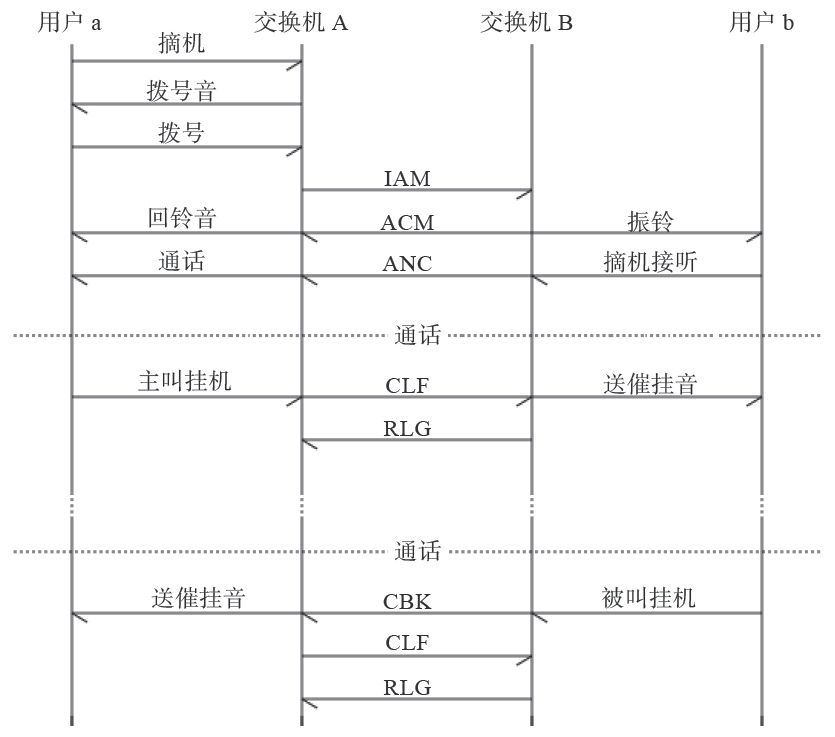
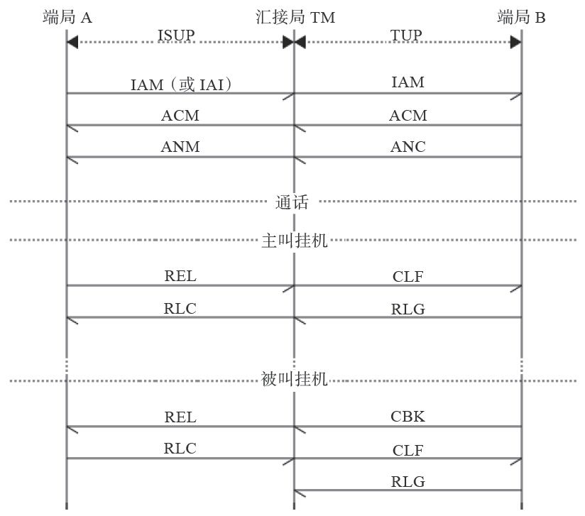
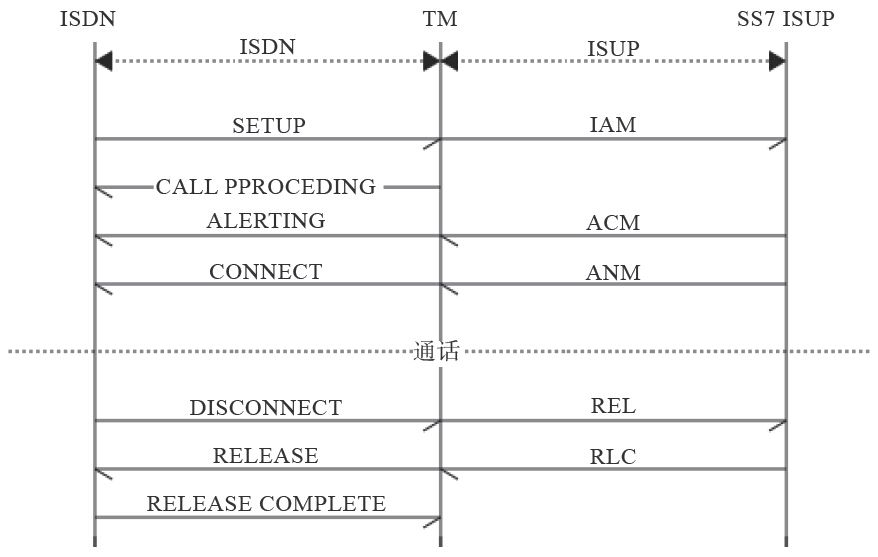
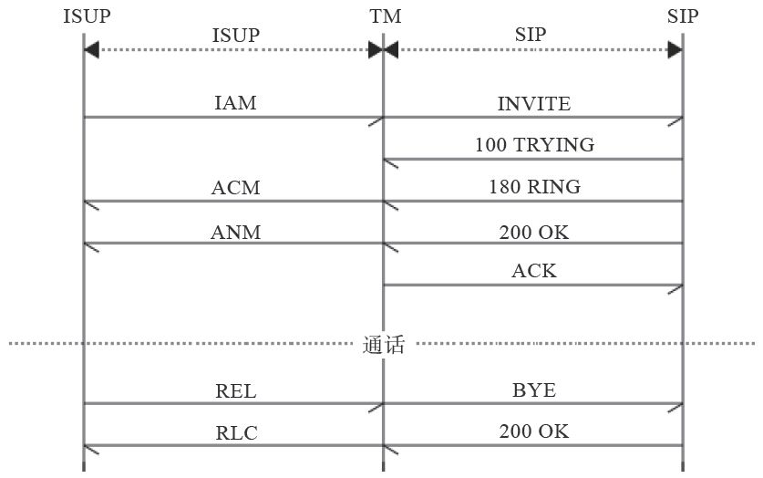

1.4 信令
用户设备（如话机）与端局交换机之间，以及交换机与交换机之间需要进行通信。这些通信所包含的信息有（但不限于）用户、中继线状态、主叫号码、被叫号码、中继路由的选择等。我们把这些消息称为信令（Signaling）。
1.4.1 信令分类
按照不同分类方式，信令可以分成很多种。下面介绍信令主要的几种分类方式。
（1）按信令的功能分
按照功能的不同，信令可以分成以下三种：
·线路信令：具有监视功能，用来监视主被叫的摘、挂机状态及设备忙闲。
·路由信令：具有选择功能，指主叫所拨的被叫号码，用来选择路由。
·管理信令：具有操作功能，用于电话网的管理和维护。
（2）按信令的工作区域分
信令按照工作区域的不同可以分成以下两种：
·用户线信令：是用户终端与交换机之间的信令。它包括用户状态（摘、挂机）信号、用户拨号（脉冲、DTMF）所产生的数字信号，以及交换机向用户终端发送的信号（铃流、信号音）。
·局间信令：是交换机和交换机之间的信令，在局间中继线上传送，用来控制呼叫接续和拆线。
 注意
注意
用户线信令少而简单，局间信令多而复杂。
（3）按信令的信道分
按照信道的不同，信令可以分为以下两种：
·随路信令：信令和话音在同一条话路中传送。
·公共信道信令：以时分方式在一条高速数据链路上传送一群话路。
随路信令传送速度慢，信息容量有限（传递与呼叫无关的信令能力有限）；公共信道信令传送速度快、容量大，具有改变或增加信令的灵活性，便于开放新业务。
（4）其他分类
另外，信令还可分为带内信令和带外信令、模拟信令和数字信令、前向信令和后向信令、线路信令和记发器信令等，我们在这里就不多解释了，有兴趣的读者可以自行搜索相关的关键词进一步学习。
下面我们分别对一些重要的信令进行简单介绍。
1.4.2 用户线信令
从用户终端（通常是话机）到端局交换机之间经常需要传送一些控制信息，如用户摘机、挂机、拨号、主叫号码显示等，这些信息称为用户线信令。用户线信令可以通过模拟或数字信号传递。
对于普通的话机，线路上传送的是模拟信号，因此信令只能在电话线路上传送，这种信令称为带内信令。话机通过电压变化来传递摘、挂机信号；通过DTMF（Dual Tone Multi Frequency，双音多频 [1] ）传送要拨叫的电话号码。另外，也可以通过移频键控（Frequency Shift-keying，FSK）技术来支持主叫号码显示，俗称来电显示（Caller Line Identification Presentation，Caller ID或CLIP，主叫线路识别提示）。
与普通电话不同，ISDN（Integrated Service Digital Network，综合业务数字网）在用户线上传送的是数字信号。它的基本速率接口（Base Rate Interface，BRI）使用144kbit/s的2B+D信道——两个64kbit/s的B信道及一个16kbit/s的D信道。其中B信道一般用来传输话音、数据和图像，D信道用来传输信令或分组信息。
2B+D的ISDN最初是为了解决用户线上的语音与数据同步传输问题。但事实上，2B+D的ISDN并不像传说中那么美，而且需要专门的NT1终端设备，在我国并没有发挥出它应有的作用，后来很快被ADSL技术取代了。
1.4.3 局间信令
交换机与交换机之间也需要传送控制信号，用于话路的建立、释放等，这些控制信号就称为局间信令。局间信令主要在局间中继上传送，传送局间信令的电路称为信令链路。一般来说，一条信令链路通常只占用一个64kbit/s的时隙。一条信令消息通常只有几十或上百个字节，一条64kbit/s的电路足以容纳成千上万路电话所需要的信令。但随着技术的进步、话务量的上涨以及更多增值业务的出现，完成一次通话需要更多的信令消息，因此出现了2Mbit/s速率的信令链路，即整个E1链路上全部传送信令。
目前在传统的PSTN网络中常见的局间信令有ISDN PRI（Primary Rate Interface，基群速率接口）信令和七号信令。PRI信令和话路在同一个E1上传送，通常使用第16时隙，而0时隙传送同步信号，其他30个时隙可传输通话信息，因此又称30B+D。与PRI信令不同，七号信令除可以与话路在同一个E1上传送外，还可以在专门的用于传送信令链路的E1中继上传送，因而它组网更加灵活，支持更大的话务量。我们将在下一节专门讲解七号信令。
支持七号信令的每个通信设备都需要有一个全局唯一信令点编码，而信令点编码资源是比较有限的。因而，七号信令主要在运营商的设备上使用，而运行商与用户设备（如PBX）一般使用PRI信令对接。
1.4.4 七号信令
七号信令（Signaling System No.7，SS7）是我国目前使用的主要信令方式，用于局间通信。我国的电话网络中有专门的七号信令网。
在此，我们先来看一次简单的固定电话的通话流程。如图1-8所示，用户a摘机，与其相连的交换机A根据电压、电流的变化检测到a摘机后，即向a发送拨号音，同时启动收号程序。a听到拨号音后开始拨号，待交换机A收齐号码后，即查找路由，发送IAM（Initial Address Message，初始地址消息）给交换机B。B向A发ACM（Adress Complete Message，地址全消息）并通知用户b（b的话机）振铃，A向a送回铃音。这时如果b接听电话，则B向A发送ANC（Answer Charge，应答计费消息），a与b开始通话，同时A对a进行计费 [2] 。

图1-8 七号信令局间呼叫流程
通话完毕，如果主叫挂机，则本端交换机A向对端B发送CLF（Clear Forward，前向释放消息），B向A返回RLG（ReleaseGard，释放监护消息），并向b传送催挂音（嘟嘟嘟……）。
如果被叫挂机，则B向A发送CBK（Clear Backword，后向释放消息），A回送CLF，最后B返回RLG。
上面在交换机A与B之间传递的为七号信令中的TUP（Telephone User Part，电话用户部分）。目前，由于ISUP（ISDN User Part，ISDN用户部分）能与ISDN互联并提供比TUP更多的能力和服务，故其已基本取代TUP成为我国七号信令网采用的主要信令方式。ISUP信令与TUP互通时的对应关系如图1-9所示。

图1-9 ISUP与TUP互通信令流程
图1-9所示为端局A与端局B经过汇接局TM汇接通信中ISUP与TUP信令的例子。ISUP信令的初始地址消息有IAM和IAI（IAM With Additional Information，带附加信息的IAM）两种，后者能提供更多的信息（如主叫号码等）。另外ISUP信令的拆线信号不分前后向，只有REL（Release，释放）和RLC（Release Complete，释放完成）。
在上一节中我们提到了ISDN PRI信令，出于完整性的考虑，这里我们也来看一下ISUP与ISDN PRI信令互通的例子。ISDN PRI使用SETUP/CONNECT/RELEASE消息分别对应ISUP中的IAM/ANM/REL消息，如图1-10所示。

图1-10 ISUP与ISDN互通的信令流程
1.4.5 H.323与SIP信令
H.323与SIP属于VoIP领域的通信信令，它们适用于用户线信令和局间信令，由于IP终端比普通话机更加智能，因此这些信令在用户线信令及局间信令使用方式上已没有太大区别。
H.323是ITU多媒体通信系列标准H.32x的一部分，该系列标准使得在现有通信网络上进行视频会议成为可能，其中，H.320是在N-ISDN上进行多媒体通信的标准；H.321是在B-ISDN上进行多媒体通信的标准；H.322是在有服务质量保证的LAN上进行多媒体通信的标准；H.324是在GSTN和无线网络上进行多媒体通信的标准。H.323为现有的分组网络PBN（如IP网络）提供多媒体通信标准，若和其他的IP技术（如IETF的资源预留协议RSVP）相结合，就可以实现IP网络的多媒体通信。
SIP（Session Initiation Protocol，会话发起协议）是由IETF（Interne工程任务组）提出的IP电话信令协议。正像其名字所隐含的那样，SIP用于发起会话，它能控制多个参与者参加的多媒体会话的建立和终结，并能动态调整和修改会话属性，如会话带宽要求、传输的媒体类型（语音、视频和数据等）、媒体的编解码格式、对组播和单播的支持等。
H.323和SIP设计之初都是作为多媒体通信的应用层控制（信令）协议，目前一般用于IP电话。它们能实现的信令功能基本相同，也都利用RTP作为媒体传输的协议。但两者的设计风格截然不同，这是由于推出它们的两大阵营（电信领域与Internet领域）都想沿袭自己的传统。H.323是由国际电信联盟提出来的，它企图把IP电话当作众所周知的传统电话，只是传输方式由电路交换变成了分组交换，就如同模拟传输变成数字传输、同轴电缆传输变成了光纤传输。而SIP侧重于将IP电话作为Internet上的一个应用，较其他应用（如FTP，E-mail等）增加了信令和QoS的要求。H.323推出较早，协议发展得比较成熟，由于其采用的是传统的实现电话信令的模式，故便于与现有的电话网互通，但相对复杂。SIP借鉴了其他Internet标准和协议的设计思想，有其突出的优点。
·SIP是基于文本的协议，而H.323采用基于ASN.1和压缩编码规则的二进制方法表示其消息，因此，SIP对以文本形式表示的消息的词法和语法分析比较简单。
·SIP会话请求过程和媒体协商过程等是一起进行的，因此呼叫建立时间短，而在H.323中呼叫建立过程和进行媒体参数等协商的信令控制过程是分开进行的。
·H.323为实现补充业务定义了专门的协议，如H.450.1、H.450.2和H.450.3等，而SIP只要充分利用已定义的头域，必要时对头域进行简单扩展就能很方便地支持补充业务或智能业务。
·H.323进行集中、层次式控制。尽管集中控制便于管理（如便于计费和带宽管理等），但是当用于控制大型会议电话时，H.323中执行会议控制功能的多点控制单元很可能成为瓶颈。而SIP类似于其他的Internet协议，设计上为分布式的呼叫模型服务，具有分布式的组播功能。
关于SIP信令我们将在第8章详细讲解，读者可以先在这里参考一下图1-11所示的ISUP与SIP间的信令转换关系图，以便建立一个直观的印象。

图1-11 ISUP与SIP互通的信令流程
[1] 话机上每个数字或字母都可以发送一个低频和一个高频信号相结合的正弦波，交换机经过解码即可知道对应的话机按键。
[2] B也可以对A计费，这种收费方式称为中继计费，主要用于局间结算（话费）。如果A和B分属于不同的运营商（如移动和电信），则称为网间结算。